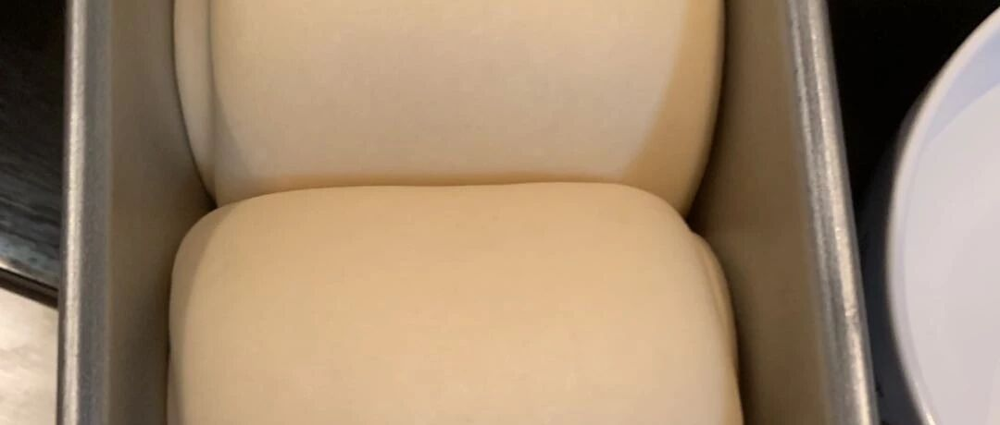

四月芳菲次第开 - 波兰种淡奶油吐司
因为前面写的阅读系列，来了很多新的粉丝，我还蛮惶恐的，因为这个系列写完了。。。【捂脸】。。。其实我是个烘焙号来着，不知道会不会接下来脱粉的厉害。只是以后还会写小朋友阅读的文章，系列已经想好了，但是还没有时间提笔，小朋友也没有时间给我反馈。。。也是有点尴尬了。希望新的系列很快上线吧。在这以前，我先回到我的老本行一段时间哈。大家尽量别脱粉，多包涵，并且，也欢迎入坑烘焙这个大坑。（求生欲真的算是很强了。。。）
家里的蔷薇开的非常漂亮，去年买的风车茉莉也开了，“若问人间何时好，四月芳菲次第开“。


非常偶然发现了这个波兰种的方子，有一个好处是，不像中种，还要隔夜，这个直接发就可以了。所以就很方便。
材料：这是两个450g吐司的量
波兰种
水 150g
高粉 150g
酵母 1g
面团：

步骤：
先做波兰种。把三个材料用筷子和在一起，慢慢来，不要画圈圈，然后就变成了这样。

发酵两小时，有很多小泡泡。我吃完中饭睡午觉了，忘记了这回事，汗颜。。。过了一点，anyway吧。。。

把所有的材料和成面团。面团真的非常非常非常软，这就是为什么我多用了50g面粉的原因。我不知道是用厨师机的原因还是什么。或者用手揉的话，就不需要了？反正先留50g待用吧。


从照片里就可以看出来特别细腻柔软的面团团。所以我没有加黄油，加了黄油更加要软的不行了。
4. 二发到两倍大。
5. 分割，滚圆，醒发10分钟。

6. 擀开，卷起来。


7. 再一次发到9分满，然后 180度 40分钟。真的是太细腻，太美了。

烤了两个，一个是平模，一个是山型（最左边的山型是另一个方子的）。我这个平模的模具，据说是贝印的，但是每次上色都很浅，不知道是不是买的山寨。感觉上要比方子多10分钟才对，下次再搞搞，这次侧面稍微有点点缩腰。三能的就无所谓了，便宜好使没要求。

真的是好看啊啊啊啊！
其他面包的方子
软欧包